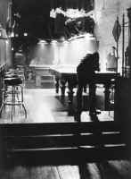

<!DOCTYPE HTML PUBLIC "-//W3C//DTD HTML 4.01 Transitional//EN"        "http://www.w3.org/TR/html4/loose.dtd">
<html lang="en">

<head>
<title>Miller Williams:&nbsp; Sitting In a Bar After a Poetry Reading - 
Henderson State University</title>
<meta http-equiv="Content-Language" content="en-us">
<meta http-equiv="Content-Type" content="text/html; charset=windows-1252">
<meta name="GENERATOR" content="Microsoft FrontPage 5.0">
<meta name="ProgId" content="FrontPage.Editor.Document">
<meta name="copyright" content="Copyright © 2002 Henderson State University">
<meta name="rating" content="General">
</head>

<body background="ARlogoborder.jpg" link="#006600" vlink="#006600" alink="#006600" bgcolor="#FFFFFF"><div style="background:#241b2e;color:#fff;font-family:Arial,sans-serif;font-size:13px;padding:6px 14px;text-align:center;position:relative;z-index:9999;display:flex;align-items:center;justify-content:center;gap:10px;flex-wrap:wrap;"><span><a href="/books/arkansas-literary-forum" style="color:#fff;text-decoration:underline;">‚Üê Back to MarckBeggs.com</a> &nbsp;|&nbsp; <span style="opacity:.75;">Arkansas Literary Forum archive, preserved as originally published</span></span></div>

<div align="right">
  <table border="0" width="85%">
    <tr>
      <td width="79%" valign="top" align="left">
        <blockquote>
          <p class="MsoNormal" style="mso-layout-grid-align:none;text-autospace:none"><b><span style="font-size:18.0pt;mso-bidi-font-size:12.0pt"><font color="#006600" face="Arial">Miller
          Williams<o:p>
          </o:p>
          </font>
          </span></b></p>
        </blockquote>
        <p class="MsoNormal" style="mso-layout-grid-align:none;text-autospace:none"><b><span style="font-size:12.0pt">Sitting
        in a Bar After a Poetry Reading<o:p>
        </o:p>
        </span></b></p>
        <p class="MsoNormal" style="margin-left:.5in;mso-layout-grid-align:none;
text-autospace:none"><span style="font-size:
12.0pt"><span style="font-family:&quot;Times New Roman&quot;">ó</span>The Turn of a Century<o:p>
        </span></p>
        <o:p>
        <p class="MsoNormal" style="mso-layout-grid-align:none;text-autospace:none"><span style="font-size:12.0pt">Today
        may be as good a day as any<br>
        to come to terms with what we know is true.<br>
        There may be some who have.<span style="mso-spacerun:
yes">&nbsp; </span>There may be many.<br>
        None of them can tell us what to do.<o:p>
        </o:p>
        </span></p>
        <p class="MsoNormal" style="mso-layout-grid-align:none;text-autospace:none"><span style="font-size:12.0pt">You
        sit at the center of nothing.<span style="mso-spacerun: yes">&nbsp; </span>Squint
        as you will,<br>
        youíll never talk your way out of this.<br>
        You could just keep your mouth shut.<span style="mso-spacerun: yes">&nbsp;
        </span>Still,<br>
        silence has an eloquence.<span style="mso-spacerun:
yes">&nbsp; </span>You may miss<o:p>
        </o:p>
        </span></p>
        <p class="MsoNormal" style="mso-layout-grid-align:none;text-autospace:none"><span style="font-size:12.0pt">the
        point of what Iím trying to say here.<br>
        But thatís the point.<span style="mso-spacerun: yes">&nbsp; </span>To
        put it all together<br>
        you have to take it apart.<span style="mso-spacerun:
yes">&nbsp; </span>If I appear<span style="mso-char-type: symbol; mso-symbol-font-family: Symbol; font-size: 12.0pt; font-family: Symbol; mso-ascii-font-family: Times New Roman; mso-fareast-font-family: Times New Roman; mso-hansi-font-family: Times New Roman; mso-bidi-font-family: Times New Roman; mso-ansi-language: EN-US; mso-fareast-language: EN-US; mso-bidi-language: AR-SA"><span style="font-family:&quot;Times New Roman&quot;">ó</span><br>
        </span>what do I want to say?<span style="font-family:&quot;Times New Roman&quot;">ó</span>as
        if another <o:p>
        </o:p>
        </span></p>
        <p class="MsoNormal" style="mso-layout-grid-align:none;text-autospace:none"><span style="font-size:12.0pt">intelligence
        has made its home in my head,<br>
        it doesnít matter.<span style="mso-spacerun: yes">&nbsp; </span>Whoever
        has control<br>
        will say whatever serves by being said.<span style="mso-spacerun: yes">&nbsp;&nbsp;<br>
        </span>The sum of the parts is greater than the whole<o:p>
        </o:p>
        </span></p>
        <p class="MsoNormal" style="mso-layout-grid-align:none;text-autospace:none"><span style="font-size:12.0pt">when
        what weíre talking about is literature<span style="mso-char-type: symbol; mso-symbol-font-family: Symbol; font-size: 12.0pt; font-family: Symbol; mso-ascii-font-family: Times New Roman; mso-fareast-font-family: Times New Roman; mso-hansi-font-family: Times New Roman; mso-bidi-font-family: Times New Roman; mso-ansi-language: EN-US; mso-fareast-language: EN-US; mso-bidi-language: AR-SA"><span style="font-family:&quot;Times New Roman&quot;">ó</span><br>
        </span>poetry in particular<span style="font-family:&quot;Times New Roman&quot;">ó</span>and
        how extremely<br>
        important it seems to be when itís obscure.<br>
        Although to say it seems somewhat unseemly<o:p>
        </o:p>
        </span></p>
        <p class="MsoNormal" style="mso-layout-grid-align:none;text-autospace:none"><span style="font-size:12.0pt">itís
        hard to do something hard and make it look easy,<br>
        which may be why itís done by very few.<br>
        The famous poet today, adroit as you please, he<br>
        made look hard what any drunk can do<span style="font-family:&quot;Times New Roman&quot;">ó</span><o:p>
        </o:p>
        </span></p>
        <p class="MsoNormal" style="mso-layout-grid-align:none;text-autospace:none"><span style="font-size:12.0pt">conceal
        a meaning in sound.<span style="mso-spacerun:
yes">&nbsp; </span>But Iím afraid<br>
        Iíve thrown my one chance to make it away.<br>
        I wanted to show you how a poem is made,<br>
        but you may have understood what I meant to say.<o:p>
        </o:p>
        </span></p>
        <p class="MsoNormal">&nbsp;</td>
      <td width="21%" valign="top" align="center"><a href="images/fisherG3.jpg">
      </a><a href="images/porterfieldJ7.jpg"><br>
        </a><font size="2">G. Fisher</font></td>
    </tr>
  </table>
</div>
<p align="center"><a title="Select to go to the Home Page" href="2000.html">HOME</a></p>

</body>

</html>